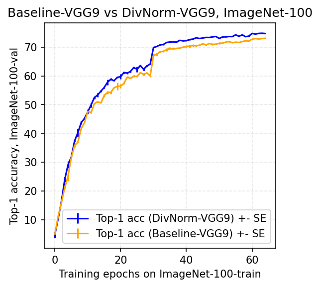

rraina@ucsd.edu
I am a senior at UC San Diego pursuing a Bachelor of Science in cognitive science, specializing in machine learning and neural computation.
At UCSD, I am a research assistant at the de Sa Lab where I'm working on brain-inspired computer vision. I am also a student researcher as a part of the HDSI & Intel DCA Research Project Collaboration. Previously, I worked at IBM in collaboration with UCSD as a researcher in their Artificial Intelligence for Healthy Living (AIHL) program.
- Paper accepted at VSS 2022.
- Joining as a Student Researcher at Intel Corporation.
- Paper accepted at SVRHM 2021 Workshop @ NeurIPS.
- Invited as a guest speaker to Barts and The London School of Medicine and Dentistry to talk about medical artificial intelligence.
- Joined the de Sa Lab as a Research Assistant in collaboration with Sony working on computer vision perception
- Honored to be an Undergraduate Researcher - Machine Learning at IBM in collaboration with UC San Diego
- Joined as a Tech Fellow (iOS) at CodePath where I taught iOS app development
- Accepted as a Research Intern at Star Capital working with Dr. Fei Tony Liu
- Started my B.S in Cognitive Science: Machine Learning and Neural Computation at UC San Diego, CA
My research interests lie in deep learning, computer vision, and optimization.
|


|
Vijay Veerabadran, Ritik Raina, Virginia R. de Sa, SVRHM 2021 Workshop @ NeurIPS paper / bibtex DivNormEI, a novel bio-inspired convolutional network that performs divisive normalization, a canonical cortical computation, along with lateral inhibition and excitation that is tailored for integration into modern ANNs. |
Student Researcher
San Diego, CA • Winter 2022 - Present
· Working in the Happiness Project Team as a part of the HDSI & Intel DCA Research Project Collaboration.

Research Assistant - Deep Learning
San Diego, CA • Winter 2021 - Present
· Researched in developing DivNormEI, a novel bio-inspired convolutional network that performs divisive normalization, along with lateral inhibition/excitation interactions, tailored for integration into modern deep neural networks. This research is supported by the Sony Research Award Program.
· Integrated DivNormEI into existing deep learning models for semantic segmentation to produce increased accuracy and robustness.
· DivNorm models outperformed Baseline-VGG9 models on the ImageNet-100 validation set by 1.8% on image classification.
· Work accepted in Shared Visual Representations in Human & Machine Intelligence (SVRHM) Workshop at NeurIPS 2021.

Undergraduate Researcher - Machine Learning
San Diego, CA • Summer 2020 - Spring 2021
· Worked with the Artificial Intelligence for Healthy Living (AIHL) team to make microbial ontology classification scale efficiently.
· Designed scalable ETL pipeline using AWS S3, and Lambda function to pre-process 300k+ microbe samples into feature representations.
· Implementing a hybrid model infrastructure consisting of both Gradient Boosting and LSTM models.
· Tuned the Bayesian-optimized BiLSTM regression model using Keras Tuner with a test accuracy of 99.6% against BERT model which gave 79% accuracy.
· Evaluated strategies to optimize memory and GPU utilization while deploying models at scale.
· A patent was filed for the project design.
· Academic Mentor: Yoshiki Vasquez Baeza
· Industry Mentors: Niina Haiminen (IBM T. J. Watson Research Center), Laxmi Parida
(Computational Genomics Group), Ho-Cheol Kim (Almaden Research Center)
Tech Fellow (iOS)
San Diego, CA • Winter 2020 - Spring 2020
· Increased the largest pipeline of high-performing underrepresented engineers in tech via Codepath, a nonprofit that has raised $1 million from Facebook and is bringing industry level courses to 23+ universities.
· As an instructor, I was required to maintain a high-level of understanding of the curriculum topics including but not limited to: Frameworks (i.e. WebKit, MapKit, ARKit, AVFoundation, Vision), iOS Libraries (AlamoFire, AlamoFireImage, MBProgressHUD, SwiftyJSON), Back-end (FireBase and Parse), TableViews and Passing Data, APIs (Twitter API, Parse API, Movies API), AutoLayout (constraints), CocoaPods.
· Additionally, I design, develop, and provide my own in-class material to enhance the learning process of iOS to 45+ committed students.

Research Intern
Jakarta, Indonesia • Summer 2019
· Worked with the Data Science team to research and develop a deep learning based system for long-term face tracking from propitiatory databases.
· Applied a Cascade-CNN model with the utilization of a VGG16 network for face detection/verification.
· Deployed further improvements such as applying a multi-patch tracking for tracking faces in consequent frames.
· Developed a QT desktop application to utilize my model and further populate the facial database.
Barts and The London School of Medicine and Dentistry
Spring 2021
· I gave an introductory talk on microbiome analysis and the use-cases of machine learning algorithms in bioinformatic applications.
- COGS 190 - Special Project (Mattar Lab)
- COGS 118AB - Machine Learning Algorithms I & II
- COGS 188 - Artificial Intelligence Algorithms
- COGS 108 - Data Science in Practice
- COGS 109 - Modeling and Data Analysis
- COGS 107AB - Neuroscience I & II
- COGS 101C - Language
- MATH 180A - Probability
- BGGN 246A - Computational Neurobiology
- NEUG 221 - Deep Learning for Neuroscience
- NEUG 240 - Math Foundations for Computational Neuroscience
- CSE 290 - AI Seminar
- CSE 152A - Computer Vision I
- CSE 101 - Design and Analysis of Algorithms
- CSE 100 - Advanced Data Structures
Website sourced from here.